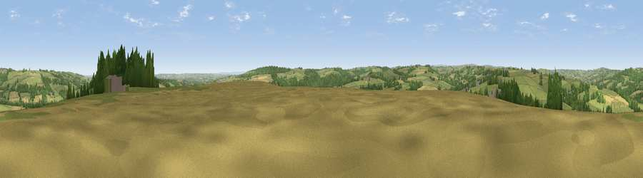

Greenland Bank
#14414 in England · top 30% of its area beats it · near EshThe view, rendered

A 360° render of this exact spot computed from the terrain model, tree cover and land cover — summer colours, afternoon light, calibrated against photographs of famous viewpoints. Real trees, hedges and buildings will differ in detail.
The panorama
Grey silhouette: terrain skyline in each direction (720 bearings, Earth curvature and refraction included). Dashed green: skyline with trees (+15 m) and buildings (+8 m) as obstacles. Blue strip: how far the ground is visible on each bearing.
Where the view opens
Wedge length = distance to the farthest visible ground on that bearing (vegetation-aware). Rings at 10, 25 and 50 km.
What fills the view
64% grassland · 19% woodland · 15% cropland · 2% built-up
Angular shares of the visible panorama (visual magnitude), not map area. Landscape diversity 0.42 (0–1 Shannon).
Key numbers
More beautiful places nearby
The staircase of upgrades: each row has a higher view potential than everything closer. Driving times are estimates from straight-line distance, calibrated against real road routing — check an actual route before setting out.
| Place | Direction | Drive | Score |
|---|---|---|---|
| Viewpoint near Burnhope | NNE · 3 km | ~8 min | 62.2 |
| Brandon Hill | SSE · 4 km | ~9 min | 69.7 |
| Viewpoint near Edmondsley | NE · 6 km | ~12 min | 72.6 |
| Pontop Pike | NNW · 10 km | ~19 min | 77.8 |
| Viewpoint near Newton Under Roseberry | SE · 45 km | ~65 min | 78.3 |
| Viewpoint near Lazenby | SE · 46 km | ~66 min | 86.4 |
| Warsett Hill | ESE · 55 km | ~77 min | 86.8 |
| Viewpoint near Easington | ESE · 60 km | ~83 min | 90.2 |
54.78705, -1.71025 · source: dobih hill · position refined by local search. Computed location — check access rights before visiting.